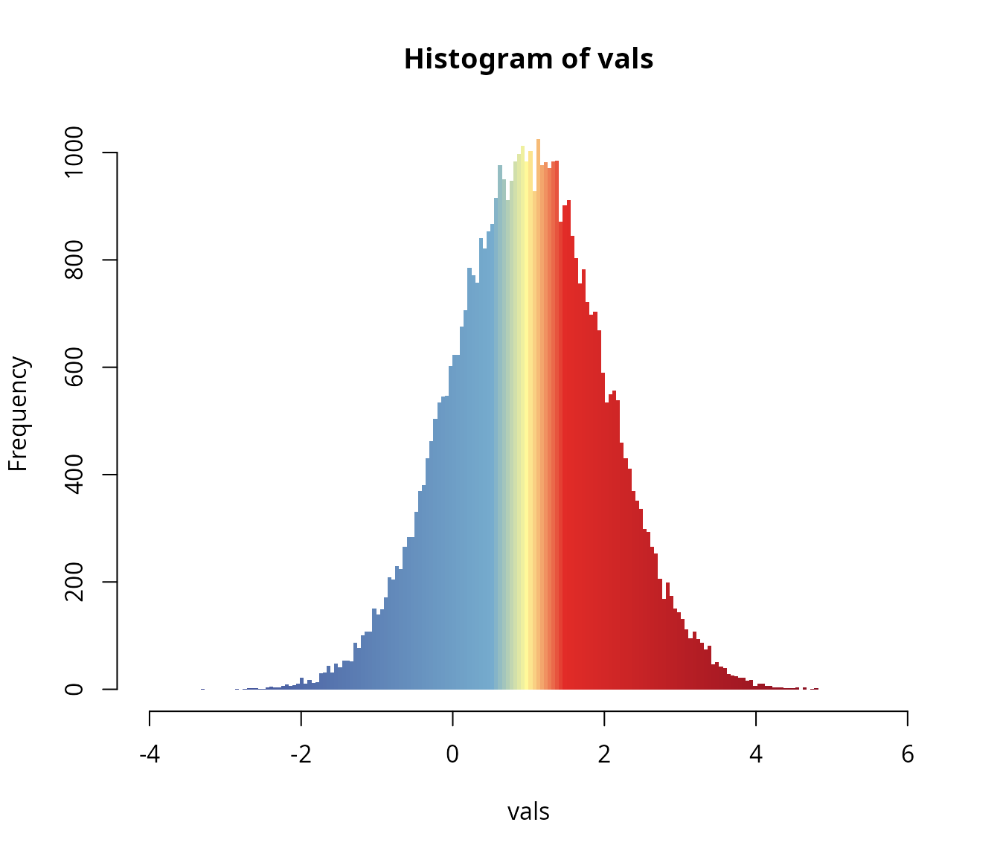
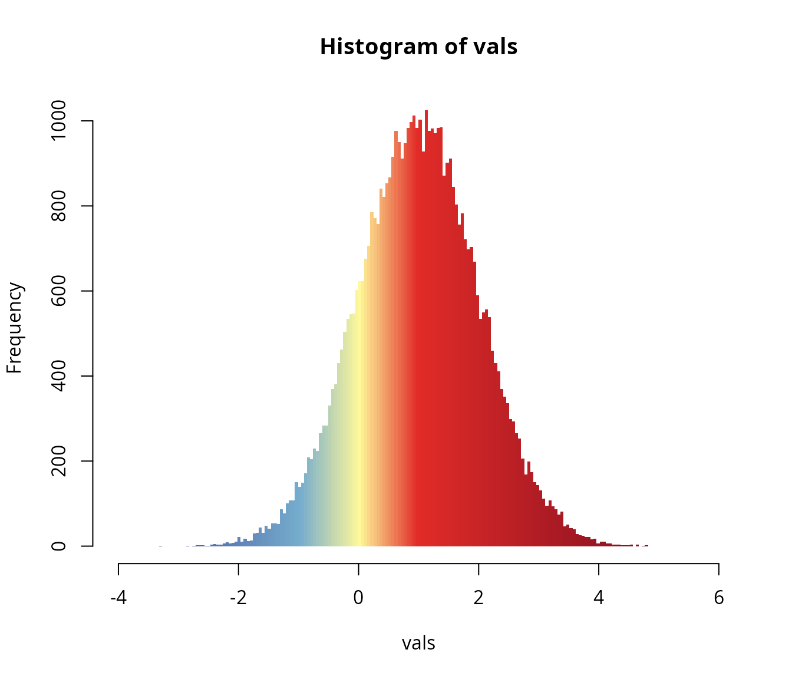

The purpose of this utility package is to give full access to the
customization and calibration of color ramps in the R environment. The
resulting objects can be instantly passed to various plotting methods,
such those provided by sf, terra and
fields to mention a few. See some examples below and on the
package’s website: https://adamtkocsis.com/rampage/.
The package itself relies on grDevices::colorRampPalette
function, which is used to linearly interpolate between colors that are
tied to specific values.
The basic functionality of the package can be combined with any
colors, either custom-selected or coming from a color ramp function. To
provide an example, rampage includes a simple 5-color ramp
called gradinv:
gradinv
#> function (n)
#> {
#> x <- ramp(seq.int(0, 1, length.out = n))
#> if (ncol(x) == 4L)
#> rgb(x[, 1L], x[, 2L], x[, 3L], x[, 4L], maxColorValue = 255)
#> else rgb(x[, 1L], x[, 2L], x[, 3L], maxColorValue = 255)
#> }
#> <bytecode: 0x619ba32bde40>
#> <environment: 0x619ba32b1580>Histograms
For the sake of a minimal demonstration, rampage can be
used to colorize bars of a histogram depending on their domain
(breakpoints). We can illustrate this with sample from a Gaussian
distribution:
Color tiepoint data frame
The definition of color ramps depend on the given colors
("color") and the the values they are tied to. In the
simplest case, we can use
df <- data.frame(
z=c(-4, 1, 6),
color=gradinv(3)
)
df
#> z color
#> 1 -4 #33358A
#> 2 1 #FFF99A
#> 3 6 #690720Using the default z and color
arguments:
ex <- expand(df, n=50)This hist function can be used with a set of breakpoints
(breaks) that are used to define the bars. The color of the
individual bars is vectorized, if exactly as many colors as many bars
are provided (number of breaks minus one), then the bars will be colored
accordingly.
hist(vals, breaks=ex$breaks, col=ex$col, border=NA)More breaks
The number of levels (breakpoints -1) is directly controled by
n. A finer resolution can be achieved with
exMore <- expand(df, n=100)
hist(vals, breaks=exMore$breaks, col=exMore$col, border=NA)More tiepoints
Specifying more tiepoints in the data.frame will give
more control over the exact placement of the colors. For example if we
want to clearly separate the values around 1 (population mean), then we
can tie more colors to values that just above and below the values
dfMoreTies <- data.frame(
z=c(-4, 0.5, 1, 1.5, 6),
color=gradinv(5)
)
dfMoreTies
#> z color
#> 1 -4.0 #33358A
#> 2 0.5 #76ACCE
#> 3 1.0 #FFF99A
#> 4 1.5 #E22C28
#> 5 6.0 #690720This can then be expanded to a full color ramp:
exMoreTies <- rampage::expand(dfMoreTies, n=200)Which can be visualized with the hist function.
hist(vals, breaks=exMoreTies$breaks, col=exMoreTies$col, border=NA)
The exact placement of the colors are easily customizable by tweaking
the z values in the data.frame that is
expanded into the ramp. For instance, if we want the colorings to
reflect the values (e.g. 0 is more important than the mean):
dfSkewed <- data.frame(
z=c(-4, -1, 0, 1, 6),
color=gradinv(5)
)
dfSkewed
#> z color
#> 1 -4 #33358A
#> 2 -1 #76ACCE
#> 3 0 #FFF99A
#> 4 1 #E22C28
#> 5 6 #690720Expanding to a full color ramp:
exSkewed <- rampage::expand(dfSkewed, n=200)
hist(vals, breaks=exSkewed$breaks, col=exSkewed$col, border=NA)
See the package website for package-specific examples.